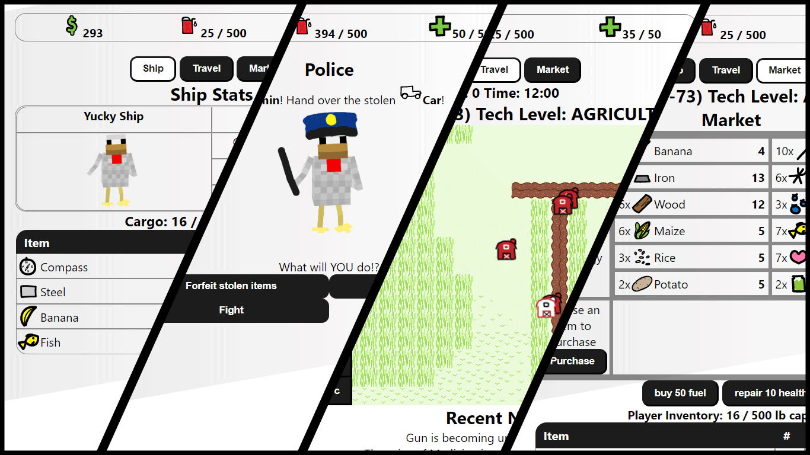

Chicken Traders is a game based on Space Trader, a 2002 strategy game for PDAs. The main objective of the
game is to earn money trading amongst the different regions in the universe. Throughout your journey, you
will face random encounters and news events that may make things more difficult!
Languages used: Python, Javascript, HTML, CSS Frameworks: Python Flask

Inspiration:
For my Object and Design class, our semester project was to create a Space Trader game. With our team name
being chicken themed, it was only logical for the project to be chicken themed as well.
Roles and Responsibilities:
Team Leader:
I was responsible for distributing the workload, organizing meeting
times, facilitating group discussions, and overlooking the progression of our project.
Front-end Developer:
I handled everything dealing with the front-end of the
project.
Creating the home, settings, skillpoints, confirm, ship, travel, market, encounter, and end
pages using HTML, CSS, and JavaScript
Building an interactive map using the leaflet.js library
Designing the icons for 56 items, the main logo, and the map using Adobe Illustrator
Connecting the front-end and back-end together using the Python Flask Framework
QA Tester:
I tested the web application for its responsiveness using Chrome Dev Tools. In addition, I also
tested for bugs and game balance. I documented issues under the GitHub Issues section of our
repository.
Post Project
After the semester, I continued to independently add more features and improvements to the game handling
every aspect of the project including back-end development.